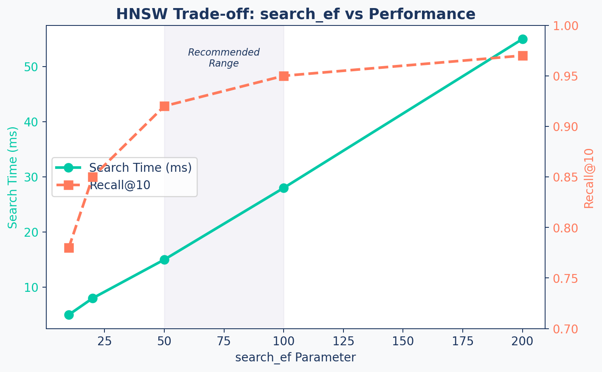

graph LR
A["HNSW: Hierarchical<br/>Navigable Small World"] --> B["Layer 2 (Top)<br/>Few nodes, long-range links"]
B --> C["Layer 1<br/>More nodes, medium links"]
C --> D["Layer 0 (Base)<br/>All nodes, short-range links"]
style A fill:#1C355E,stroke:#1C355E,color:#fff
style B fill:#9B8EC0,stroke:#1C355E,color:#fff
style C fill:#FF7A5C,stroke:#1C355E,color:#fff
style D fill:#00C9A7,stroke:#1C355E,color:#fff
Vector Storage & Retrieval
RAG Foundations & Data Pipelines — Session 3
2026-02-28
A. Vector Store Landscape
Choosing where your vectors live
Agenda
- A. Vector Store Landscape — Comparing databases
- B. HNSW Indexing — How fast search actually works
- C. Vector Store Manager — Building the storage layer
- D. The RAG Service — Wiring up Retrieve → Augment → Generate
- E. Production Concerns — Updates, deletions, versioning
- F. Wrap-up — The complete pipeline so far
Why Specialized Databases?
Regular databases weren’t built for similarity search over high-dimensional vectors.
SQL Database: “Find rows where id = 42” — exact match, indexed by B-tree
Vector Database: “Find the 5 most similar vectors to this 1536-dimensional point” — approximate nearest neighbor search
The key difference: Vector DBs use specialized index structures (HNSW, IVF) that trade small accuracy losses for massive speed gains.
Comparison Table
| Store | Type | Scale | Managed? | Best For | Cost |
|---|---|---|---|---|---|
| ChromaDB | Local/Server | ~1M | Self-hosted | Prototyping, small datasets | Free |
| Pinecone | Cloud-native | Billions | Fully | Large-scale production | ~$70/mo+ |
| Weaviate | Hybrid | Millions | Both | Flexibility, hybrid search | Free/Cloud |
| pgvector | PG extension | Millions | Self | Existing Postgres users | Free |
Our Choice: ChromaDB
Why ChromaDB for Development
- Zero operational overhead — no cloud account needed
- Runs locally — no network dependency
- Good performance up to ~1M vectors
- Python-native API — simple and intuitive
For production at scale → evaluate Pinecone, Weaviate Cloud or Qdrant … etc.
B. HNSW Indexing
The algorithm behind fast vector search
How HNSW Works
- Start search at the top layer (coarse navigation)
- Descend through layers (progressively finer)
- At each layer, greedily move toward the query vector
- Base layer gives the final nearest neighbors
Key Parameters
| Parameter | What It Controls | Default | Trade-off |
|---|---|---|---|
hnsw:space |
Distance metric | cosine |
Use cosine for text |
hnsw:M |
Links per node | 16 | More = better recall, more memory |
ef_construction |
Build-time search depth | 200 | Higher = better index, slower build |
ef_search |
Query-time search depth | 10-100 | Higher = better recall, slower search |
Speed vs Accuracy
Tuning Rules
Recommended Starting Points
M = 16— good for up to 1M vectorsef_construction = 200— solid build qualityef_search = 50-100— balance speed and recallspace = cosine— always for text embeddings
Key insight: You can increase
ef_searchat query time without rebuilding the index. Start low, increase until latency is unacceptable.
C. Vector Store Manager
Building the storage layer
Architecture
graph TD
A[VectorStoreManager] --> B[ChromaDB Client]
A --> C[Collection with HNSW]
A --> D[Embedding Function]
B --> E["Persistent Storage<br/>(./data/vector_store)"]
C --> F["add_documents()"]
C --> G["search()"]
C --> H["get_collection_stats()"]
style A fill:#1C355E,stroke:#1C355E,color:#fff
style B fill:#00C9A7,stroke:#1C355E,color:#fff
style C fill:#FF7A5C,stroke:#1C355E,color:#fff
style D fill:#9B8EC0,stroke:#1C355E,color:#fff
Init + HNSW Config
class VectorStoreManager:
def __init__(self, persist_directory="./data/vector_store",
collection_name="research_papers"):
# Persistent client — survives restarts
self.client = chromadb.PersistentClient(
path=persist_directory,
settings=Settings(anonymized_telemetry=False)
)
# Collection with optimized HNSW
self.collection = self.client.get_or_create_collection(
name=collection_name,
metadata={
"hnsw:space": "cosine",
"hnsw:construction_ef": 200,
"hnsw:search_ef": 100,
"hnsw:M": 16,
}
)Batch Ingestion
def add_documents(self, documents, batch_size=100):
"""Add documents with embeddings in batches."""
for i in range(0, len(documents), batch_size):
batch = documents[i:i + batch_size]
ids, embeddings, metadatas, texts = [], [], [], []
for doc in batch:
# Deterministic ID prevents duplicates
content_hash = hashlib.md5(
doc['text'].encode()).hexdigest()
ids.append(f"doc_{content_hash}")
embeddings.append(doc["embedding"])
metadatas.append(doc.get("metadata", {}))
texts.append(doc["text"])
self.collection.add(
embeddings=embeddings, documents=texts,
metadatas=metadatas, ids=ids)Search
def search(self, query_embedding, n_results=5,
filter_conditions=None):
"""Search for similar documents."""
results = self.collection.query(
query_embeddings=[query_embedding],
n_results=n_results,
where=filter_conditions,
include=["documents", "metadatas", "distances"]
)
# Convert distance to similarity score
formatted = []
for i in range(len(results["documents"][0])):
formatted.append({
"text": results["documents"][0][i],
"metadata": results["metadatas"][0][i],
"score": 1 - results["distances"][0][i]
})
return formattedDedup Strategy
Preventing Duplicates
D. The RAG Service
Wiring it all together
The RAG Loop
sequenceDiagram
participant User
participant RAGService
participant EmbeddingGen
participant VectorStore
participant LLM
User->>RAGService: "What is FlashAttention?"
RAGService->>EmbeddingGen: embed_query(question)
EmbeddingGen-->>RAGService: [0.1, 0.4, ...] vector
RAGService->>VectorStore: search(vector, k=5)
VectorStore-->>RAGService: [Chunk A, Chunk B, Chunk C]
RAGService->>RAGService: construct_prompt(query, chunks)
RAGService->>LLM: generate(prompt)
LLM-->>RAGService: "FlashAttention is..."
RAGService-->>User: Answer + Sources
RAGService Class
class RAGService:
"""Orchestrates Retrieval + Generation."""
def __init__(self):
self.embedding_gen = EmbeddingGenerator()
self.vector_store = VectorStoreManager()
self.model = "openrouter/openai/gpt-4-turbo-preview"
async def answer_question(self, query: str):
# 1. RETRIEVE
query_vector = await self.embedding_gen.embed(query)
results = self.vector_store.search(query_vector, n=5)
# 2. AUGMENT
context = self._build_context(results)
prompt = f"Context:\n{context}\n\nQuestion: {query}"
# 3. GENERATE
response = litellm.completion(
model=self.model,
messages=[
{"role": "system", "content": SYSTEM_PROMPT},
{"role": "user", "content": prompt}
], temperature=0.3)
return {"answer": response.choices[0].message.content,
"sources": [r['metadata'] for r in results]}The Three Steps
1. Retrieve
- Embed the query
- Search vector store
- Get top-K chunks with scores
- Filter by metadata if needed
2. Augment
- Format retrieved chunks
- Build system prompt
- Inject context into user message
- Stay within token budget
3. Generate
- Call LLM with augmented prompt
- Low temperature for accuracy
- Parse response
- Return answer + sources
E. Production Concerns
Keeping your knowledge base alive
Living Knowledge Base
Your document corpus changes. You need strategies for:
1. Incremental Updates — Add new documents without rebuilding
2. Document Deletion — Remove outdated or incorrect content
3. Re-embedding — When you change models or chunking strategies
Update / Delete
def update_document(self, doc_id, new_text,
new_embedding, new_metadata):
"""Update = delete + re-add."""
self.collection.delete(ids=[doc_id])
self.collection.add(
embeddings=[new_embedding],
documents=[new_text],
metadatas=[new_metadata],
ids=[doc_id])
def delete_by_metadata(self, filter_conditions):
"""Delete all docs matching a metadata filter."""
results = self.collection.get(where=filter_conditions)
if results["ids"]:
self.collection.delete(ids=results["ids"])Versioning
def create_versioned_collection(self, version_suffix):
"""Create a new version when changing models."""
new_name = f"{self.collection_name}_{version_suffix}"
return self.client.create_collection(
name=new_name,
metadata={
"parent_collection": self.collection_name,
"created_at": datetime.now().isoformat(),
"version": version_suffix,
})When you change embedding models or chunking strategies, you need a new collection. Old embeddings are incompatible with new model vectors.
Pitfalls Table
| Pitfall | Symptom | Solution |
|---|---|---|
| Memory explosion | Crash on large batches | Process in batches of 100-500 |
| Slow searches | Latency > 100ms | Lower ef_search, use SSD |
| Inconsistent results | Different scores for same query | Verify same embedding model |
| Metadata bloat | Large collection file | Store only essential metadata |
F. Wrap-up
The complete pipeline so far
Complete Pipeline
flowchart LR
A["Raw Docs"] --> B["Ingest &<br/>Clean"]
B --> C["Chunk"]
C --> D["Embed"]
D --> E[("Vector<br/>Store")]
F["User Query"] --> G["Embed<br/>Query"]
G --> E
E --> H["Top-K<br/>Chunks"]
H --> I["LLM<br/>Generate"]
I --> J["Answer +<br/>Sources"]
style A fill:#9B8EC0,stroke:#1C355E,color:#fff
style B fill:#9B8EC0,stroke:#1C355E,color:#fff
style C fill:#00C9A7,stroke:#1C355E,color:#fff
style D fill:#00C9A7,stroke:#1C355E,color:#fff
style E fill:#1C355E,stroke:#1C355E,color:#fff
style F fill:#FF7A5C,stroke:#1C355E,color:#fff
style G fill:#FF7A5C,stroke:#1C355E,color:#fff
style H fill:#FF7A5C,stroke:#1C355E,color:#fff
style I fill:#FF7A5C,stroke:#1C355E,color:#fff
style J fill:#1C355E,stroke:#1C355E,color:#fff
Built vs Missing
What We’ve Built
- Document ingestion & cleaning
- Three chunking strategies
- Embedding generation at scale
- Vector store with HNSW index
- Basic RAG Service (R→A→G)
What’s Still Missing
- Handles complex queries poorly
- No keyword search fallback
- No re-ranking quality gate
- No citation formatting
- No evaluation framework
Key Takeaways
- Vector databases use specialized indexes (HNSW) for fast approximate search
- ChromaDB is ideal for development; Pinecone/Weaviate for production scale
- HNSW parameters (
M,ef_construction,ef_search) control the speed-accuracy trade-off - Batch ingestion with content-based hashing prevents duplicates
- The RAG Service orchestrates Retrieve → Augment → Generate
- Version your collections when changing embedding models or chunking strategies
Up Next
Lab 3: Build your first working RAG system — connect all components and test with real queries on your research paper corpus.